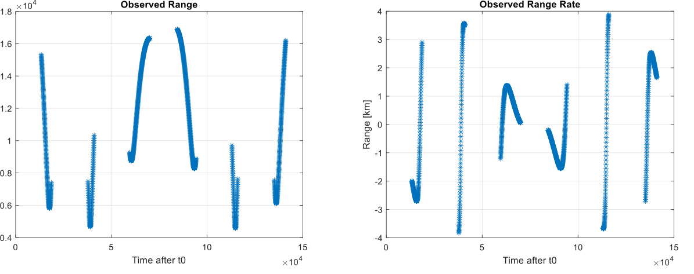
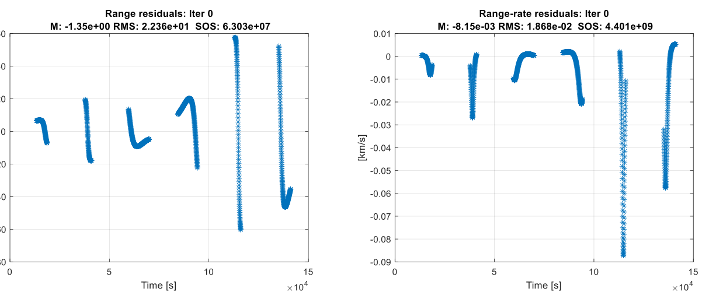
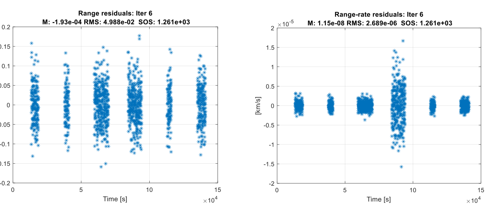
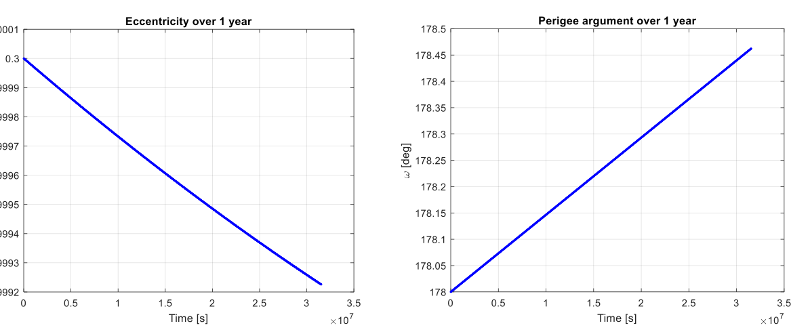
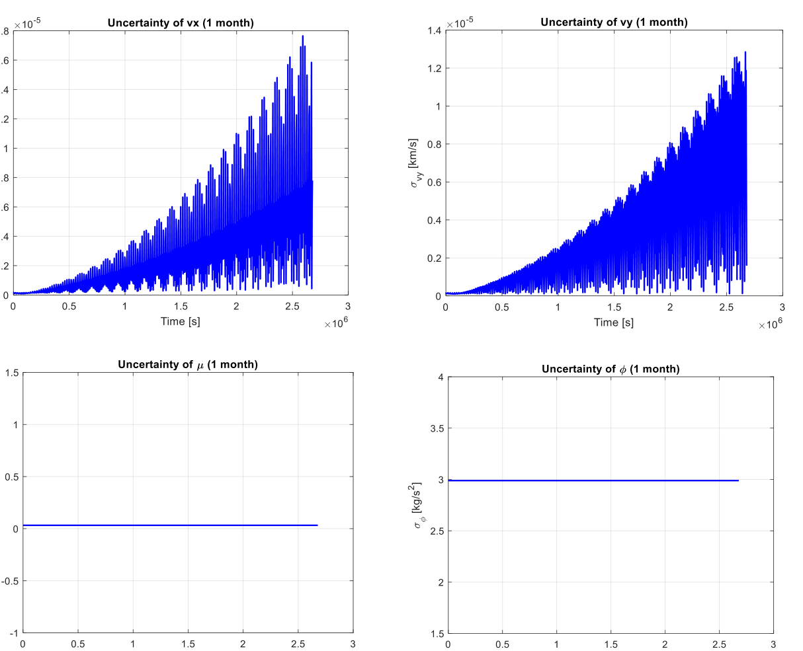
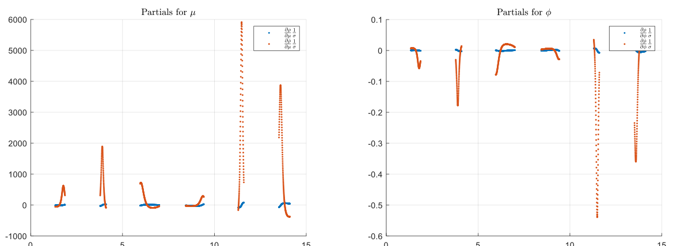

Back to ProjectsTorna a Progetti
Orbit determination with a batch estimatorDeterminazione orbitale con stimatore batch
Homework 1, Space Missions and Systems, Sapienza University of Rome, 2019/2020
Homework 1, Space Missions and Systems, Sapienza Università di Roma, 2019/2020
A ground station on the equator tracks a spacecraft in an eccentric orbit around the Earth. From its range and range rate measurements I estimated, in MATLAB, where the spacecraft was at the start of the tracking, together with two physical constants: the Earth's gravitational parameter and the solar flux pushing on the spacecraft. I then propagated the orbit for a year and the uncertainty for a month, and checked which kind of measurement carries more information on the two constants.
Una stazione di terra sull'equatore segue uno spacecraft in orbita eccentrica intorno alla Terra. Dalle sue misure di range e range rate ho stimato, in MATLAB, dove si trovava lo spacecraft all'inizio del tracciamento, insieme a due costanti fisiche: il parametro gravitazionale terrestre e il flusso solare che spinge sullo spacecraft. Ho poi propagato l'orbita per un anno e l'incertezza per un mese, e verificato quale tipo di misura porta più informazione sulle due costanti.
- 1261range and range rate pairscoppie di range e range rate
- 6parameters estimatedparametri stimati
- 0.3 muncertainty on the initial positionincertezza sulla posizione iniziale
- ±0.03km³/s² on the Earth's μkm³/s² sul μ terrestre
The problemIl problema
The spacecraft is a flat plate of 10 m² and 100 kg, always facing the Earth, in an equatorial orbit with eccentricity 0.3 and a period of about 5.3 hours. Besides the Earth's gravity, it feels the pressure of sunlight, with the Sun far away along the negative x axis. The state to estimate has six components: position and velocity in the orbital plane, the gravitational parameter μ and the solar flux Φ. The station rotates with the Earth and its position is known exactly; it provides range to 100 m and range rate to 1 cm/s, in short passes over about a day and a half.
Lo spacecraft è una lastra piana di 10 m² e 100 kg, sempre rivolta verso la Terra, in orbita equatoriale con eccentricità 0,3 e un periodo di circa 5,3 ore. Oltre alla gravità terrestre, risente della pressione della luce solare, con il Sole lontano lungo l'asse x negativo. Lo stato da stimare ha sei componenti: posizione e velocità nel piano dell'orbita, il parametro gravitazionale μ e il flusso solare Φ. La stazione ruota con la Terra e la sua posizione è nota esattamente; fornisce il range con precisione di 100 m e il range rate di 1 cm/s, in brevi passaggi distribuiti su circa un giorno e mezzo.

Batch estimatorStimatore batch
Both the dynamics and the measurements are nonlinear, so I linearised them around a reference trajectory, integrating the state transition matrix along with the orbit, and corrected the initial state at each iteration with a batch least squares estimator. The a priori estimate and its uncertainty enter as extra information; for the solar flux, which had none, I started from 1371 ± 5 W/m².
Sia la dinamica sia le misure sono non lineari, quindi le ho linearizzate attorno a una traiettoria di riferimento, integrando la matrice di transizione insieme all'orbita, e ho corretto lo stato iniziale a ogni iterazione con uno stimatore batch ai minimi quadrati. La stima a priori e la sua incertezza entrano come informazione aggiuntiva; per il flusso solare, che non l'aveva, sono partito da 1371 ± 5 W/m².
- Weighted least squares. In the first four iterations the measurements are weighted with their nominal accuracy. The residuals lose their dynamic signature after three iterations and become white noise around zero.
- Minimum variance. Two more iterations weight each measurement with the variance actually observed in the residuals. The fourth pass of range rate data is noisier than the others, so it gets a lower weight.
- Minimi quadrati pesati. Nelle prime quattro iterazioni le misure sono pesate con la loro accuratezza nominale. I residui perdono la firma dinamica dopo tre iterazioni e diventano rumore bianco attorno allo zero.
- Minima varianza. Altre due iterazioni pesano ogni misura con la varianza effettivamente osservata nei residui. Il quarto passaggio di dati di range rate è più rumoroso degli altri, quindi riceve un peso minore.


ResultsRisultati
At convergence the residuals have zero mean and their sum of squares equals the number of measurements, as expected for white noise. The initial position is known to about 0.3 m and the velocity to 0.2 mm/s, against the 20 km and 1 m/s of the a priori estimate.
A convergenza i residui hanno media nulla e la loro somma dei quadrati è pari al numero di misure, come atteso per un rumore bianco. La posizione iniziale è nota con un'incertezza di circa 0,3 m e la velocità di 0,2 mm/s, contro i 20 km e 1 m/s della stima a priori.
| A prioriA priori | EstimatedStimato | Uncertainty (1σ)Incertezza (1σ) | |
|---|---|---|---|
| x | −10843 km | −10843.3905 km | 0.33 m |
| y | 380 km | 378.6597 km | 0.23 m |
| vx | −0.2412 km/s | −0.2411819 km/s | 0.15 mm/s |
| vy | −6.9066 km/s | −6.9065446 km/s | 0.18 mm/s |
| μ | 398604 km³/s² | 398600.012 km³/s² | 0.032 km³/s² |
| Φ | 1371 W/m² | 1367.1 W/m² | 3.0 W/m² |
Orbit and uncertainty over timeOrbita e incertezza nel tempo
Propagating the estimated state for a year shows the slow effect of solar radiation pressure: the eccentricity drops from 0.30000 to 0.29992 and the argument of perigee turns from 178° to about 178.5°. Propagating the covariance for a month, the uncertainty on position and velocity grows, oscillating with each orbit, because no new measurements arrive. The uncertainty on μ and Φ stays constant, since in the model they are constants and the state transition matrix leaves them unchanged.
Propagando lo stato stimato per un anno si vede l'effetto lento della pressione di radiazione solare: l'eccentricità scende da 0,30000 a 0,29992 e l'argomento del perigeo ruota da 178° a circa 178,5°. Propagando la covarianza per un mese, l'incertezza su posizione e velocità cresce, oscillando a ogni orbita, perché non arrivano nuove misure. L'incertezza su μ e Φ resta costante, perché nel modello sono costanti e la matrice di transizione le lascia invariate.


Range or range rate?Range o range rate?
To see which measurement constrains μ and Φ better, I compared the partial derivatives of range and range rate with respect to the two parameters, scaled by their weights: these build the information matrix, whose inverse is the covariance. Range rate is far more sensitive to both. Running the estimator with one kind of measurement at a time confirms it: with range rate alone the uncertainty on μ is four times smaller than with range alone, and on Φ it drops from 5 to 3 W/m².
Per capire quale misura vincola meglio μ e Φ, ho confrontato le derivate parziali di range e range rate rispetto ai due parametri, scalate per i loro pesi: sono queste a formare la matrice di informazione, la cui inversa è la covarianza. Il range rate è molto più sensibile a entrambi. Ripetendo la stima con un solo tipo di misura alla volta si ha la conferma: con il solo range rate l'incertezza su μ è quattro volte più piccola che con il solo range, e su Φ scende da 5 a 3 W/m².
